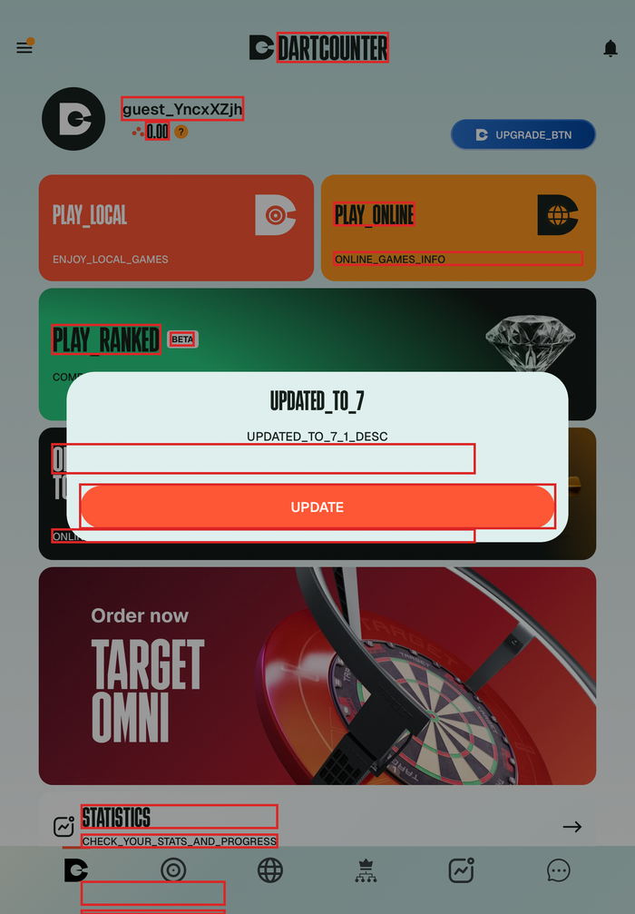
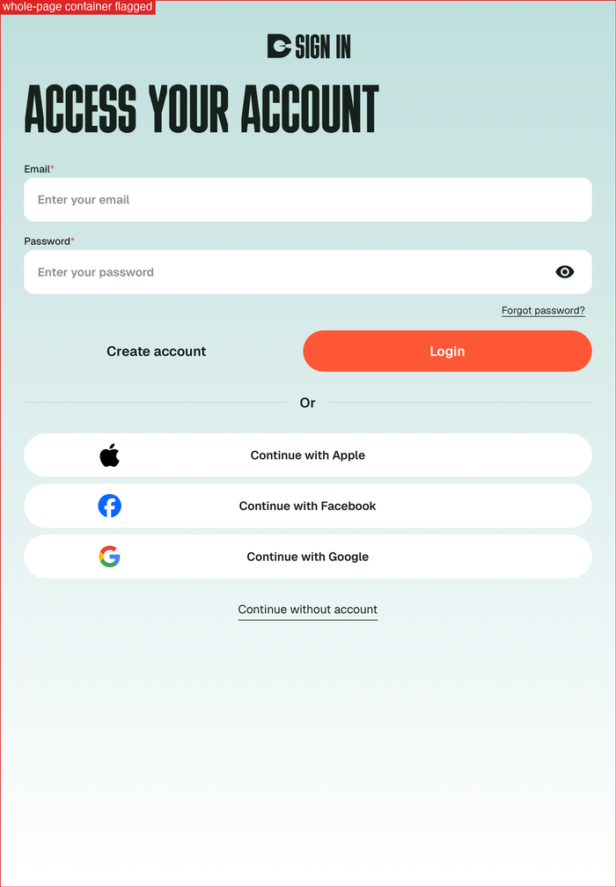
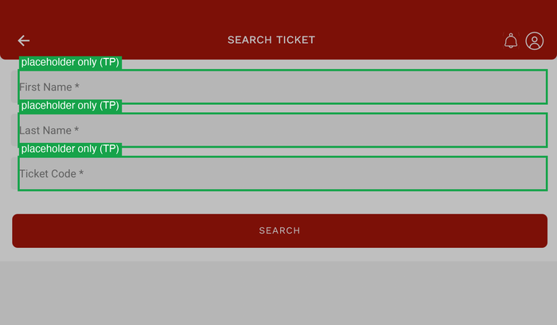
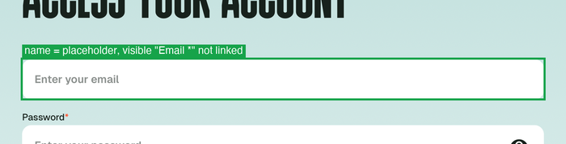
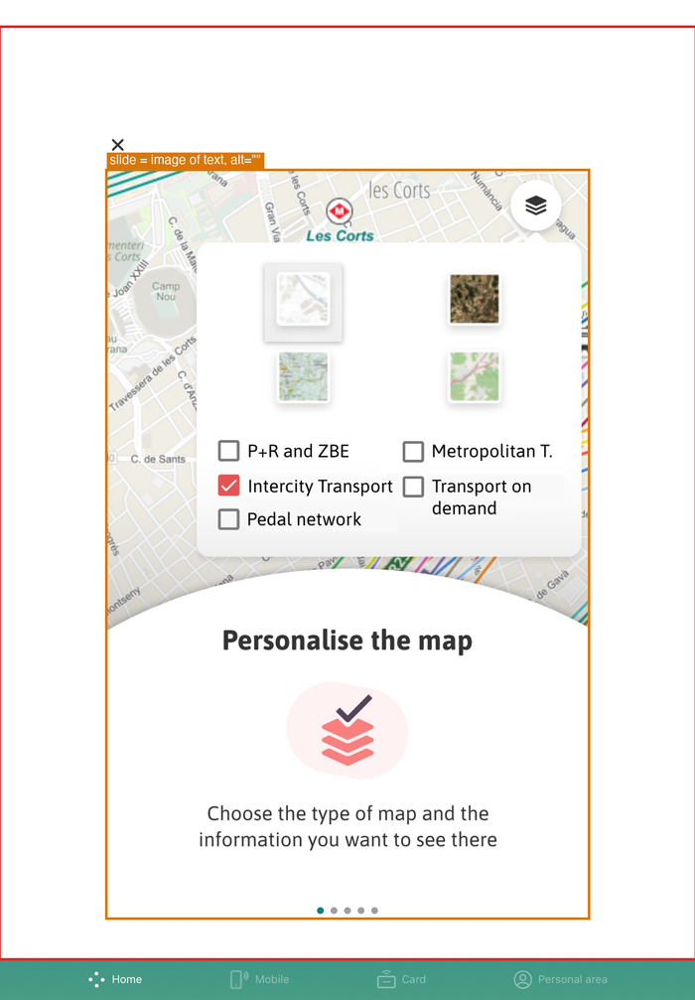
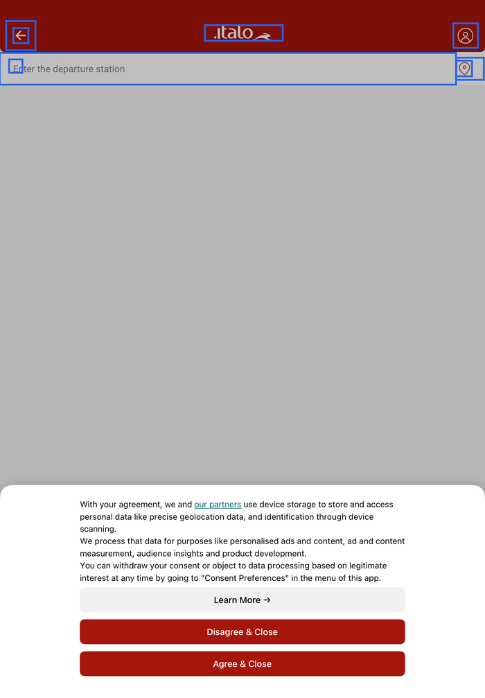

← WebView & Angular support analysis · Rule support summary · Partial rules
The Rule Lab is our own test app. These are production App Store apps, sideloaded on the iPad (iPadOS 26.5) with the PR #360 injector
(head 64ecda3 plus the shadow-root fix below), driven over Web Inspector and scanned on device. Customers' apps cannot be downloaded,
so these were picked from AppBrain's lists of apps that ship Ionic / Capacitor / Cordova, then verified as Angular by reading their web bundle (ng-version).
| IPA | Found in the bundle | Scanned |
|---|---|---|
DartCounter 9.6.2 com.dartcounter.app | Ionic + Angular (current), Capacitor | ✅ 7 screens (guest mode) |
Italo 6.1.0 com.accenture.ntvapp | Ionic + Angular 15.2.9, Capacitor | ✅ 4 screens |
T-mobilitat 1.21.0 cat.atm.tmobilitat | Ionic + Angular 8.2.14, Cordova, inside a native SwiftUI app | ✅ 6 screens (3 native) |
McDonald's com.mcdonalds.gma | No web bundle: the global app is fully native (Kotlin Multiplatform). The Angular app is McDonald's India (com.il.mcdelivery), a different app. | ❌ skipped |
Issues = rule results on web elements only (Accessible Interactive Elements excluded: it is disabled in rule_config).
| App | Screen | Nodes | Web elements | DOM ms | Fail | AI / review |
|---|---|---|---|---|---|---|
| DartCounter 9.6.2 | 01-language-dialog | 105 | 58 | 31 | 18 | 64 |
| DartCounter 9.6.2 | 02-login | 57 | 31 | 16 | 18 | 44 |
| DartCounter 9.6.2 | 03-terms-dialog | 72 | 40 | 23 | 21 | 51 |
| DartCounter 9.6.2 | 04-dashboard | 102 | 51 | 36 | 22 | 42 |
| DartCounter 9.6.2 | 05-play-local | 73 | 38 | 29 | 17 | 35 |
| DartCounter 9.6.2 | 06-match-setup | 109 | 65 | 34 | 31 | 56 |
| DartCounter 9.6.2 | 07-statistics | 161 | 83 | 65 | 39 | 94 |
| Italo 6.1.0 | 01-home | 89 | 36 | 33 | 30 | 41 |
| Italo 6.1.0 | 02-station-search | 109 | 10 | 31 | 6 | 8 |
| Italo 6.1.0 | 03-retrieve-ticket | 87 | 15 | 21 | 10 | 18 |
| Italo 6.1.0 | 04-loyalty-program | 117 | 36 | 26 | 10 | 54 |
| Italo 6.1.0 | x-inapp-browser-hidden | 147 | 36 | 34 | 29 | 41 |
| T-mobilitat 1.21.0 | 01-launch | 28 | 0 | — | 0 | 0 |
| T-mobilitat 1.21.0 | 02-identify-native | 28 | 0 | — | 0 | 0 |
| T-mobilitat 1.21.0 | 03-home-native | 78 | 0 | — | 0 | 0 |
| T-mobilitat 1.21.0 | 04-plan-journey-intro | 97 | 4 | 17 | 3 | 1 |
| T-mobilitat 1.21.0 | 05-departures-intro | 83 | 5 | 8 | 3 | 1 |
| T-mobilitat 1.21.0 | 06-faqs-loading | 60 | 0 | 8 | 0 | 0 |
POC bug On Italo the extractor threw RangeError: Maximum call stack size exceeded and returned 0 web elements. Two helpers walk shadow roots with elementsFromPoint, which also returns the outer shadow hosts; with two nested Ionic shadow roots they bounced between them forever:
deepStack (background colour under a point) recursed into a shadow root it had already visited.deepHit (topmost element at a point) looped between two hosts.Fix: remember visited roots / hosts and only descend into a host's own shadow tree. After the fix Italo's home screen gives 36 elements in 33 ms. Neither the Rule Lab nor DartCounter triggered it.
DartCounter showed an update dialog over a dark, semi-transparent backdrop. The extractor takes the backdrop as an opaque black background (alpha is not composited), so every label behind it fails contrast: 99 fails across the DartCounter scans, all #17211C on #000000. The elements behind the dialog are also still evaluated, although they are covered.
Fix: composite alpha, and skip elements whose hit-test lands on an overlay (ion-backdrop, [aria-modal]).

Apps attach click listeners to page-level wrappers (a dismiss-on-tap backdrop, Ionic's app root, a swiper). The click-listener hook marks them, so a full-screen div becomes a role-less tappable and fails Unsupported Type, Keyboard Focus, Missing View Type and Overlapping on every screen.
Fix: ignore marked elements that cover most of the viewport or that contain other controls.

ion-button renders a real <button> in its shadow root. The host (pointer cursor, no role) is emitted as a role-less tappable, and the inner button is emitted again with the size of its text only, so the tab-bar items "Home" (29×43) and "Real Time" (48×43) fail Touch Target Size although the tappable host is 93×71.
Fix: treat ion-button / ion-tab-button / ion-item[button] hosts as the control (role button, host rect) and fold the inner button into them.
Italo's "Search ticket" form has First Name / Last Name / Ticket Code fields named only by their placeholders; Accessible Input Field Labels fails all three. The screenshot confirms there is no visible label.

DartCounter's login shows "Email *" above the field, but the input's accessible name is its placeholder "Enter your email". VoiceOver reads the placeholder; the visible label is not associated. Flagged by Accessible Input Field Labels and sent to AI by Editable Element Label.

T-mobilitat's "Plan journey" intro is a Cordova web view embedded in SwiftUI. Each slide, heading and text included, is one image with alt="". Screen readers skip it entirely, and no rule reports it: images with an empty alt are treated as decorative and never reach Images with Text.
The close control is again a full-screen tappable backdrop (red).

Italo's consent dialog is native and covers the bottom of the web page. Both are captured; the web elements under the dimmed area (blue) are not marked as covered, so visual rules still judge them.

Italo's "Real Time" opens an external site in a second web view in its own window. The scan screenshots a blank page and extracts the hidden home page underneath (36 elements), while the visible page is missed. Fix: collect web views from every window in z-order and drop those that are fully covered.
T-mobilitat's FAQ and two other web screens returned 0 elements because their content was still loading at scan time. Correct for that instant, but a continuous scan should re-capture when the web view finishes loading.
Shipped feature The injector's webviewInspect patch (LCAM-2671) makes web views inspectable by setting isInspectable at WKWebView init. Capacitor release builds set isInspectable = isWebDebuggable (false) after creating the web view, so the flag is reset and the web view stays hidden from Web Inspector. For these scans the test build re-applies it at scan time; the shipped patch would need to swizzle setInspectable: or re-apply after load.
public/ or www/) for ng-version / @angular/core.isInspectable re-applied at scan time.pymobiledevice3 webinspector cdp + JS clicks and router navigation; native onboarding screens were tapped by hand.